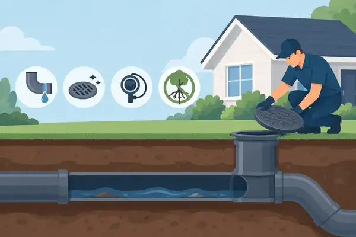
October 21, 2026 How to Prevent Sewer Backups Before They Start A sewer backup can turn an ordinary day into a cleanup emergency fast. One toilet begins to gurgle, a tub fills with dirty water, or a floor drain… October 19, 2026 How Leak Detectors Protect Middle Tennessee Homes A leaking supply line behind a washing machine can release gallons of water before anyone notices. A slow drip under a bathroom vanity can quietly damage…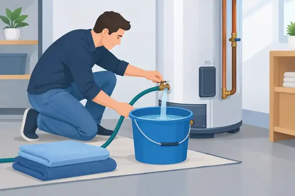
October 17, 2026 How to Flush Water Heater Without a Mess That rumbling sound from the utility room is often more than a minor annoyance. It can be sediment collecting at the bottom of a tank water heater, where…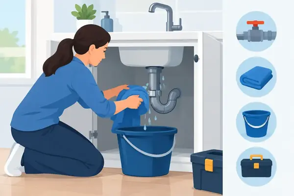
October 15, 2026 Emergency Plumbing Steps Before Help Arrives A burst pipe rarely waits for a convenient time. It may happen while your family is getting ready for church, during a busy workday, or after everyone has…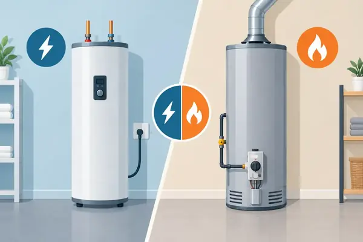
October 13, 2026 Electric Versus Gas Water Heaters: Which Fits? A water heater rarely fails at a convenient time. When the shower turns cold or a tank begins leaking, the decision between electric versus gas water…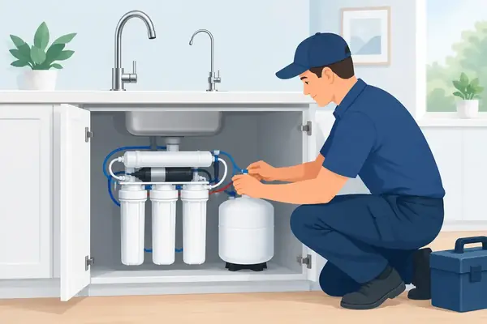
October 11, 2026 What Reverse Osmosis Installation Involves A reverse osmosis installation can turn the water at one kitchen tap into a dependable source for drinking, cooking, coffee, baby bottles, and pet bowls.… October 9, 2026 Plumbing Financing for Repairs and Upgrades A failed water heater rarely waits for a convenient month. Neither does a sewer backup, a slab leak, or a burst pipe that threatens the flooring in your…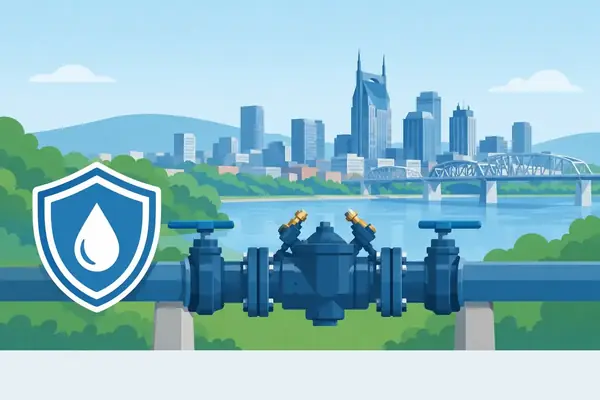
October 7, 2026 Backflow Compliance Guide for Middle Tennessee A backflow test notice can feel like one more item on an already full property-maintenance list. But this backflow compliance guide starts with the reason…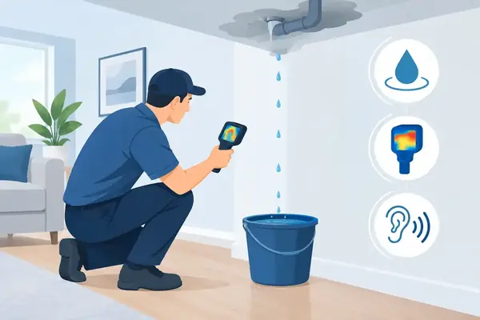
October 5, 2026 How to Locate Water Leaks Before Damage Spreads A water leak rarely announces itself with a burst pipe and a flooded floor. More often, it starts with a water bill that creeps up, a soft spot near a…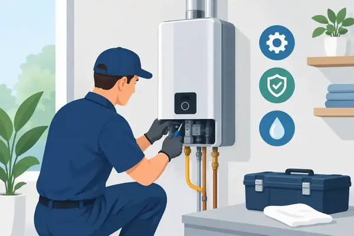
October 3, 2026 Tankless Heater Maintenance That Prevents Trouble A tankless water heater is easy to forget when it is doing its job well. Hot water arrives on demand, the unit takes up little space, and there is no…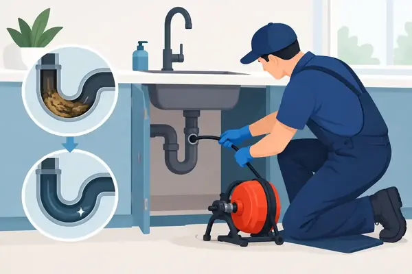
October 1, 2026 Drain Cleaning for Slow and Stubborn Drains A slow kitchen sink can seem like a small inconvenience until the water stops draining altogether during dinner cleanup. A shower that holds water around… September 29, 2026 Slab Leak Detection: Signs Your Home Can't Ignore A warm spot in the floor, the quiet sound of running water when every fixture is off, or a water bill that suddenly climbs can point to a leak beneath…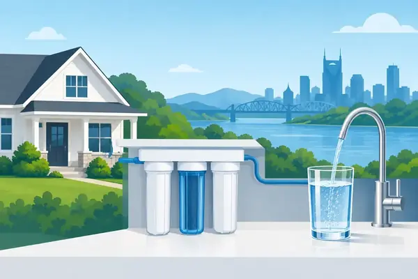
September 27, 2026 Water Filtration for Middle Tennessee Homes A glass of water can look perfectly clear and still leave a chlorine taste, cloudy ice cubes, white scale on fixtures, or dry-feeling skin after a shower.…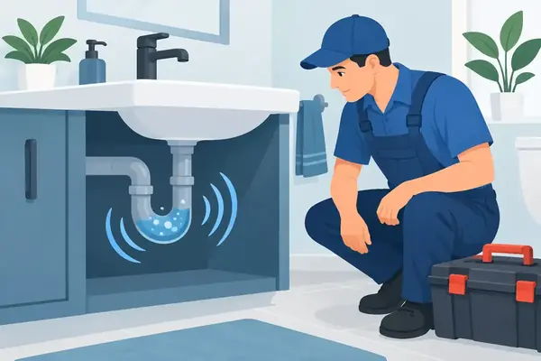
September 25, 2026 Drain Gurgling Causes and When to Call a Plumber A drain that gurgles after you flush a toilet, run the dishwasher, or empty a sink is more than an annoying sound. Drain gurgling causes often point to…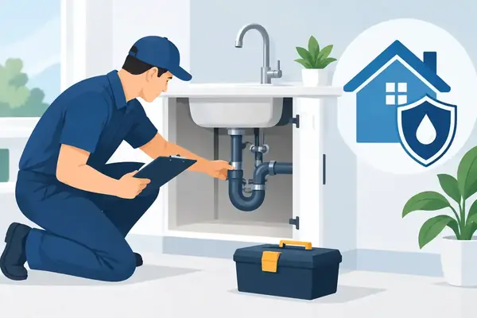
September 23, 2026 Plumbing Inspections That Protect Your Property A slow leak beneath a kitchen sink can damage cabinet floors for months before anyone sees it. A water heater can appear to be working normally while…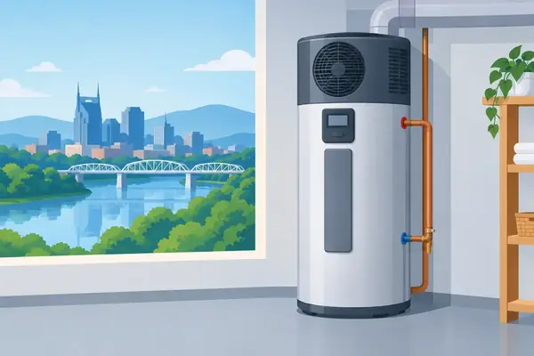
September 21, 2026 Heat Pump Water Heater Guide for Middle Tennessee A water heater is easy to overlook until the morning shower turns cold or a growing utility bill gets your attention. This heat pump water heater guide is…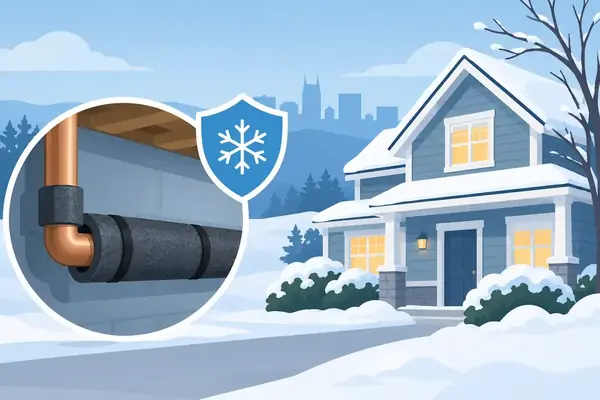
September 19, 2026 Frozen Pipe Prevention for Middle Tennessee Homes A hard freeze in Murfreesboro can turn a quiet night into a costly plumbing emergency by morning. Frozen pipe prevention is not about overreacting to…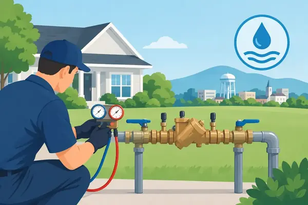
September 17, 2026 Backflow Testing Murfreesboro Property Owners Need A backflow device usually does its job quietly, out of sight and out of mind. That is exactly why backflow testing Murfreesboro property owners schedule… September 15, 2026 Commercial Plumbing Murfreesboro Businesses Trust A restaurant can lose a full shift to a backed-up kitchen drain. A medical office can face an uncomfortable shutdown when a restroom fixture will not stop…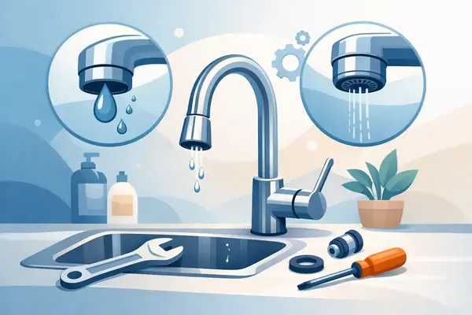
September 13, 2026 Kitchen Faucet Repair for Leaks and Low Flow A kitchen faucet that drips into the sink all night, sprays across the counter, or barely produces a stream can make an ordinary task frustrating. Kitchen…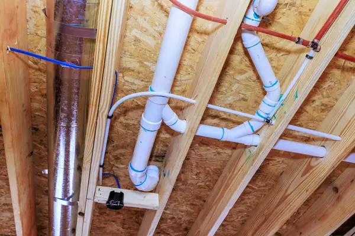
September 12, 2026 Why Pressure Test My Plumbing System? When structural disaster strikes - whether from fire, storm damage, high winds, falling debris, or major impact - the visible damage is only part of the…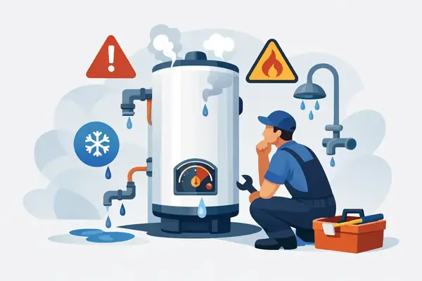
September 12, 2026 Hot Water Heater Repair Signs You Should Not Ignore A cold shower is frustrating. A leaking water heater in a garage, utility closet, attic, or commercial mechanical room can become much more than an… September 11, 2026 Is a Smart Water Shutoff Valve Worth It? A ceiling stain, a wet cabinet floor, or a water bill that suddenly climbs can turn an ordinary day into a costly plumbing emergency. A smart water…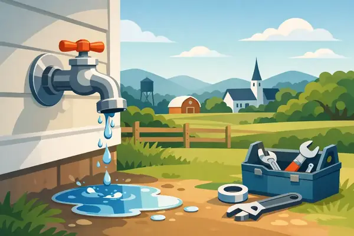
September 10, 2026 What to Do About an Outside Faucet Leak in Woodbury TN A small drip from an outdoor spigot can seem easy to ignore, especially when the faucet is tucked beside the garage or behind a flower bed. But an outside… September 9, 2026 Shower Faucet Repair in Woodbury TN: Fix or Call? A need for shower faucet repair in Woodbury, TN, often starts with a small annoyance: a steady drip after the handle is off, a shower that suddenly runs…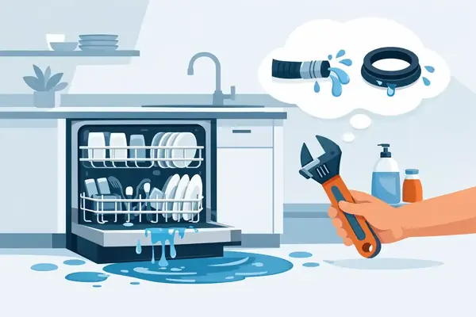
September 8, 2026 Why Is My Dishwasher Leaking? Causes and Fixes A puddle at the base of the dishwasher can turn a normal kitchen cleanup into a stressful moment fast. If you are asking, why is my dishwasher leaking…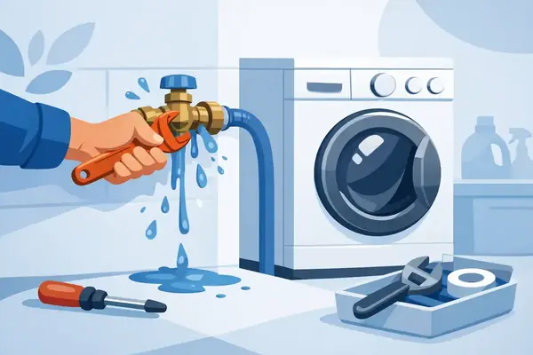
September 7, 2026 Fix a Washing Machine Water Valve Leak Fast A puddle behind the washer is easy to dismiss until it reaches the wall, warps the laundry-room floor, or seeps into the room below. A washing machine… September 6, 2026 Ice Maker Water Line Repair in Woodbury, TN That small puddle beneath the refrigerator can become a much bigger problem by morning. A loose fitting, cracked plastic tube, or failing refrigerator… September 5, 2026 Sewer Pipe Repair Woodbury TN: Signs to Act A sewer problem rarely starts with a dramatic backup. More often, it begins with a toilet that gurgles when the washer drains, a stubborn tub clog, or a…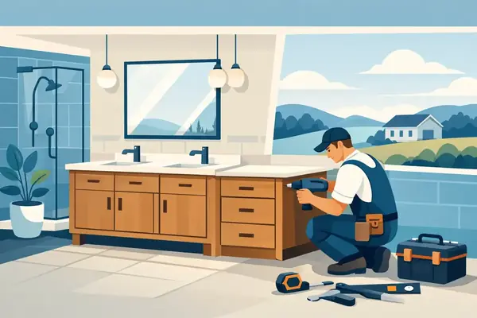
September 4, 2026 Bathroom Vanity Installation Woodbury TN A new vanity can make a dated bathroom feel clean, useful, and more like home. But when you search for bathroom vanity installation Woodbury TN, the…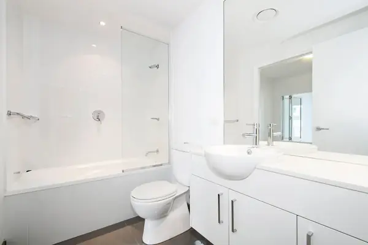
September 3, 2026 Looking to Purchase a New Toilet? Take Time to Understand the Differences Buying a new toilet sounds simple until you realize not every toilet fits every bathroom. One of the most important details to understand before you buy…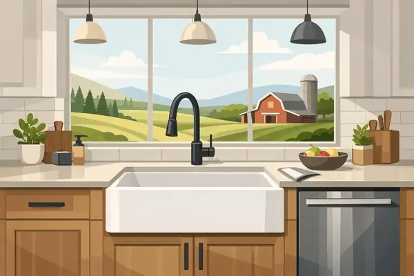
September 3, 2026 Farm Sink Installation Woodbury TN for Your Kitchen A farmhouse sink changes more than the look of a kitchen. Its deep basin makes meal prep, large pots, and family cleanup easier, but its size and weight…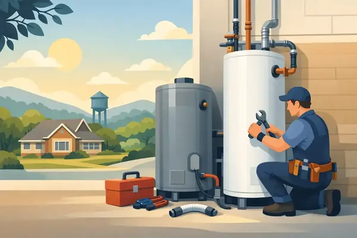
September 2, 2026 Hot Water Heater Replacement in Woodbury, TN A cold shower is often the first warning, but it is rarely the only one. If you are searching for hot water heater replacement Woodbury TN homeowners can… September 1, 2026 Busted Water Line Repair in Woodbury, TN A water line can fail without much warning. One moment, the water pressure seems a little low. The next, there is water spreading across the yard, pooling… August 31, 2026 Emergency Plumbing Services in Woodbury, TN Water on the floor at 10 p.m. is not a problem that can wait for a convenient appointment. A search for emergency plumbing services woodbury tn usually…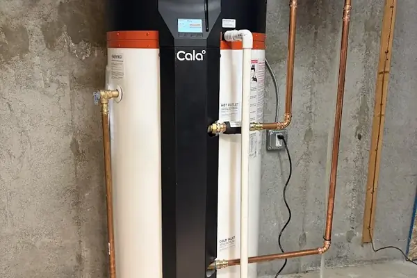
August 28, 2026 Why Angle Stop Plumbing Partnered with Cala Heat Pump Water Systems At Angle Stop Plumbing, we are always looking for better ways to serve homeowners with solutions that combine comfort, efficiency, and long-term value.…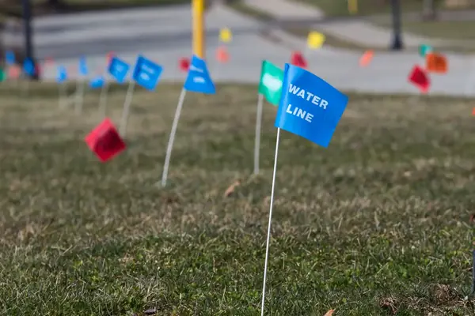
August 22, 2026 Why Utility Markings Matter Before Digging If you've ever seen spray paint or small colored flags on the ground before a project starts, those markings are there for a reason. Utility workers use a…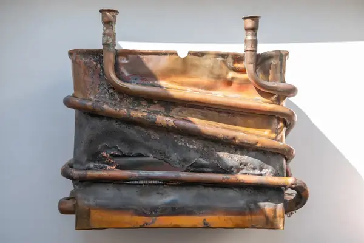
August 15, 2026 Calculating the Return on Investment of Buying a New Water Heater from Angle Stop Plumbing A new water heater is not just a replacement purchase - it can be a smart financial decision. If your current unit is aging, inefficient, or struggling to…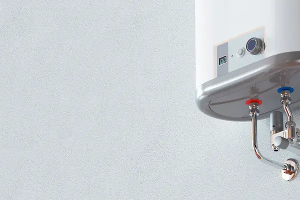
August 9, 2026 Hot Water, Zero Headaches: Why Professional Installation Matters for Your Water Heater A hot shower is one of those modern comforts you don’t fully appreciate until it suddenly turns into an ice bath. When it’s time to replace your old unit…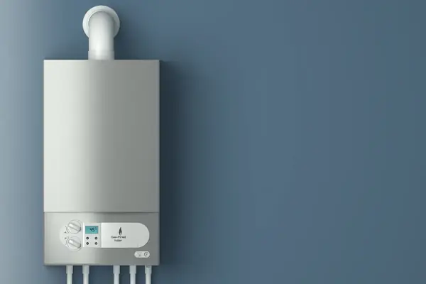
August 1, 2026 Why Tankless Water Heaters Need Annual Descaling and Service A tankless water heater is one of the best upgrades a homeowner can make for comfort, energy efficiency, and endless hot water. But if you want that…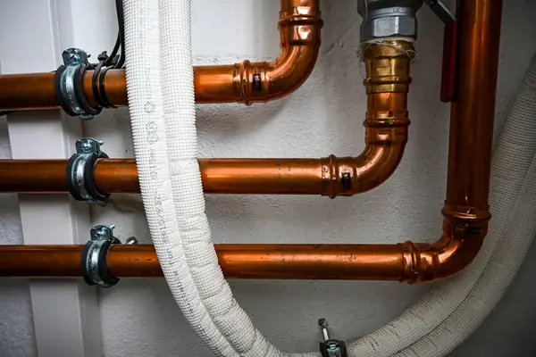
July 25, 2026 Why Is There Such a Big Cost Difference Between Installing Copper Pipe vs PEX Pipe? If you have ever compared estimates for a home repipe, a plumbing remodel, or replacing old water lines, you may have been surprised by the large price…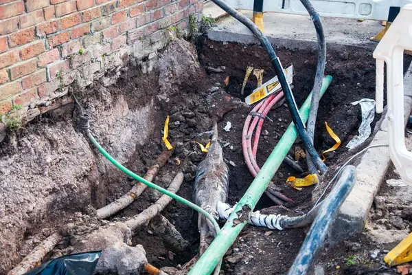
July 17, 2026 Improperly Installed Underground Drainpipes: Why They Collapse, How Backups Start, and When to Call Angle Stop Plumbing An underground drainpipe should carry wastewater away from your home smoothly and reliably. When that pipe is installed incorrectly, though, it may slowly…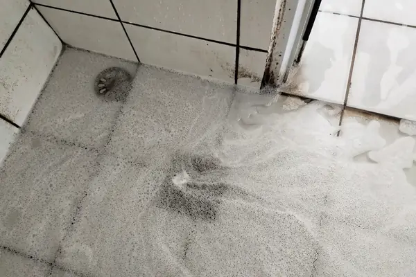
July 11, 2026 Sewer Backup in the Shower? Your Drain May Be Telling on the Last Plumber There are few moments in life more offensive than stepping into your shower and realizing the water coming up from the drain is bringing bad news from…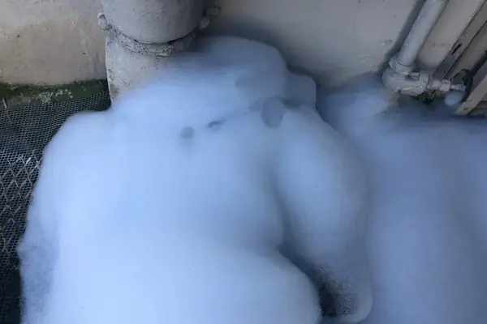
July 4, 2026 Washing Machine Drain Keeps Backing Up? Improper Pipe Sizing Could Be the Cause A washing machine drain that overflows, gurgles, or backs up again and again is rarely just a clog. In most cases, the real culprit is improperly sized…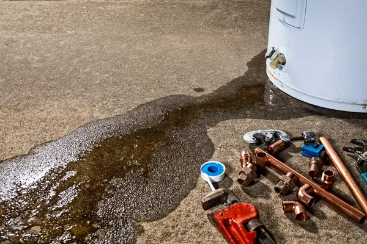
June 27, 2026 3 Plumbing Problems Homeowners Shouldn’t Ignore (And Why You Should Call Now) When it comes to home maintenance, plumbing issues are often pushed aside—until they become emergencies. A small leak or slow drain might not seem urgent… June 13, 2026 Why Sediment Is the Silent Killer of Water Heaters - And How Angle Stop Plumbing Helps Extend Water Heater Life Most homeowners do not think about their water heater until it stops producing hot water. By then, the real problem may have been building for years… June 6, 2026 Why Adding a Gas Appliance Is Not as Simple as Tapping into Your Existing Gas Line Adding a new gas appliance sounds straightforward. You have an existing gas line, the new appliance needs gas, so it seems like a simple connection should…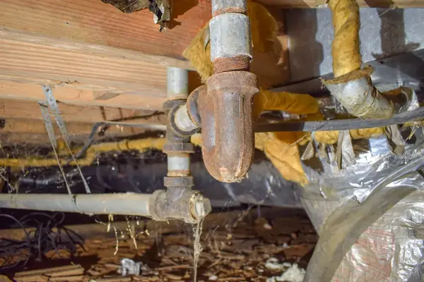
May 30, 2026 Why Old Cast Iron Plumbing Pipes Are So Difficult to Work With — And How Angle Stop Plumbing Can Help If your home was built before the 1970s, there is a strong chance that cast iron pipes are quietly running beneath your floors, inside your walls, and…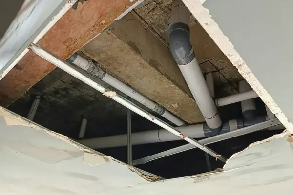
May 23, 2026 Licensed, responsible plumbers: why structural integrity comes first in any renovation When you’re renovating a kitchen, bathroom, or whole home, it’s tempting to focus on fixtures, finishes, and layout. But before any pipe is run or wall is…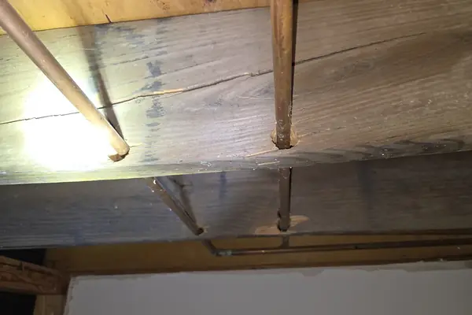
May 8, 2026 Why You Should Never Drill Near the Bottom Edge of a Floor Joist for Plumbing | Angle Stop Plumbing When plumbing needs to pass through a floor system, the quickest route can look like the best route. But drilling holes near the bottom edge of a floor…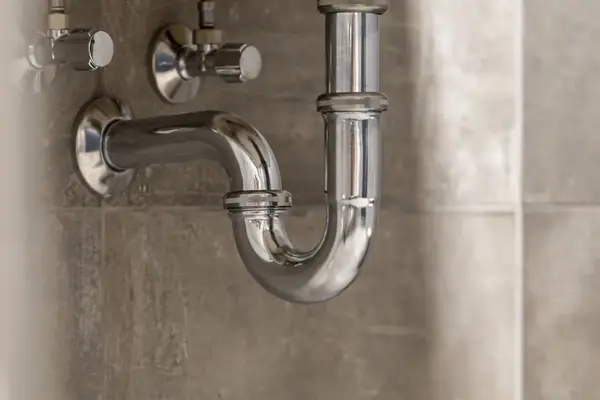
April 30, 2026 Why P-Traps Are Important for Sinks, Showers, Tubs, and More When it comes to plumbing, some of the most important parts of your system are also the easiest to overlook. One of those parts is the P-trap. Found…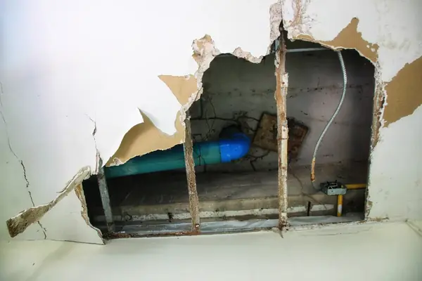
April 25, 2026 Top 10 Causes of Water Damage in Your Home — And Why Scheduled Plumbing Inspections Save You Thousands Water damage strikes without warning, turning minor issues into major disasters. In Middle Tennessee, where homes often sit on crawlspaces vulnerable to…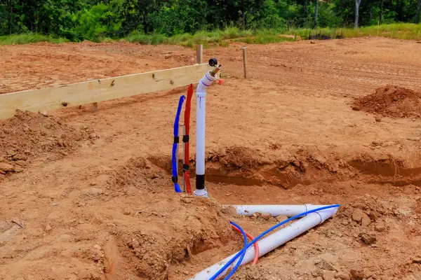
April 18, 2026 Why It’s Important to Install a New Water Line with Protective Pipe Casing Your home’s water line — the pipe that runs from the city meter to your house — is one of the most vital parts of your plumbing system. It delivers all…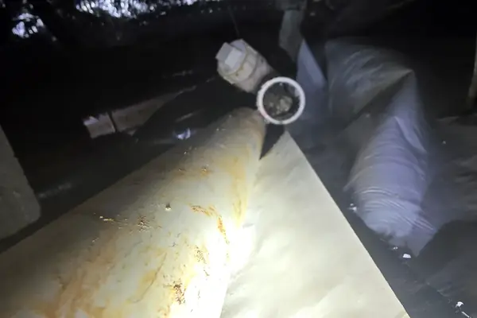
April 12, 2026 Why Your Home’s "Flow" Depends on the Right Slope Most homeowners don't spend much time thinking about their drainpipes until something goes wrong. We tend to assume that as long as water goes down the…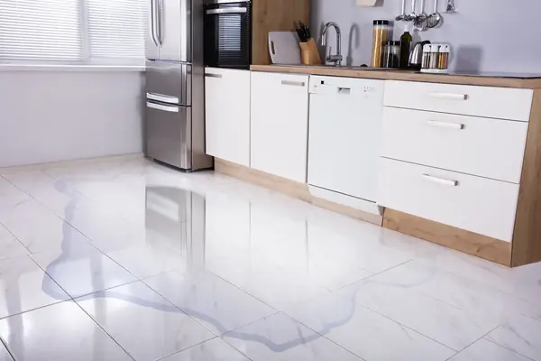
April 3, 2026 Hidden Floods: How Many Gallons a Day a Small Appliance Line Can Leak—and Why You Shouldn’t Wait to Fix It It starts with a small puddle behind the refrigerator or a faint drip under the sink. Easy to ignore, right? Unfortunately, that “minor” leak can quietly…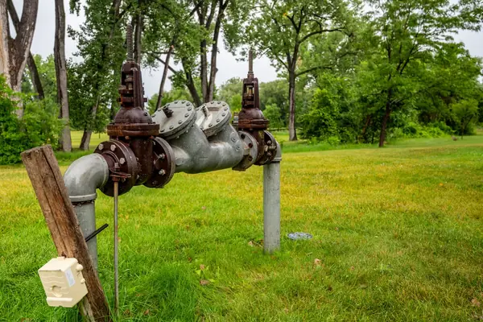
March 28, 2026 Keep Your Water Safe: Why Maintaining Your Backflow Preventer Matters Whether you’re a homeowner or a business owner, your plumbing system does more behind the scenes than you might realize. One of the most important — and…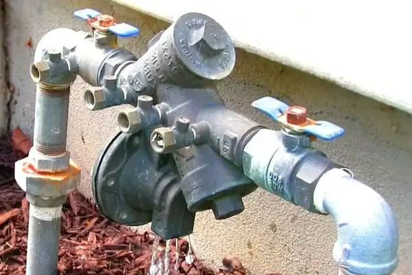
March 20, 2026 The Importance of Keeping Your Backflow Preventer Tested and Operational Backflow preventers are a critical but often overlooked component of your plumbing system. They protect your drinking water from contamination by… March 7, 2026 Why Relocate Bathroom Plumbing Right After Tear-Out—and How Angle Stop Plumbing Ensures a Seamless Reno Bathroom renovations are exciting... until plumbing delays turn your dream spa into a dusty nightmare. The golden rule? Relocate all plumbing immediately… March 7, 2026 Why Routine Plumbing Maintenance with Angle Stop Plumbing is Essential for Your Home Routine plumbing maintenance isn't just a chore—it's your home's first line of defense against costly disasters. Partnering with Angle Stop Plumbing…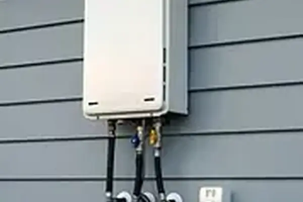
February 27, 2026 Why Your Existing Gas Pipe Needs Upsizing for a Tankless Water Heater – And How Angle Stop Plumbing Can Help Upgrading to a tankless water heater is a smart move for most homeowners. These on-demand systems deliver endless hot water, save energy (up to 30% on…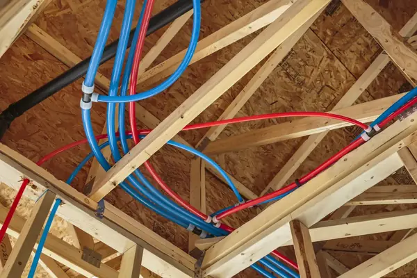
February 21, 2026 The Hidden Concerns of Early PEX Plumbing — and How Angle Stop Plumbing Can Bring Peace Back to Your Home PEX (cross-linked polyethylene) piping has become a popular choice for residential plumbing over the past few decades, known for its flexibility… February 16, 2026 Is Your Home Warranty Company Credible? Here’s What You Need to Know — and Why a Local Maintenance Plan May Be the Better Choice Homeownership brings comfort and pride — but it also brings maintenance responsibilities and unexpected repair costs. Many homeowners look to home…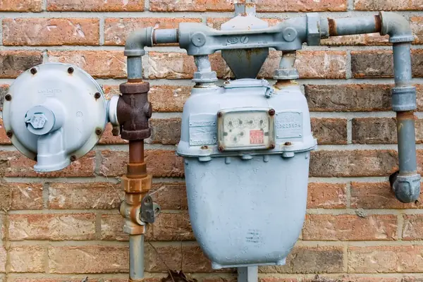
February 14, 2026 Why Natural Gas and Propane Are Measured in Inches of Water Column — and How Angle Stop Plumbing Ensures Your Appliances Get the Right Supply for Peak Performance When it comes to gas-fueled appliances, most homeowners think in terms of pressure — PSI (pounds per square inch). But if you’ve ever looked at a natural…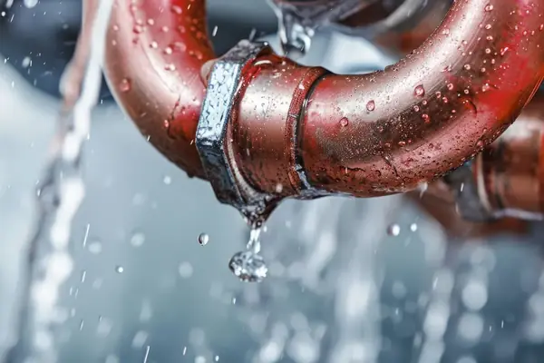
February 7, 2026 As the Weather Warms Up — Don’t Forget to Check Your Plumbing with Angle Stop Plumbing After a long stretch of cold weather, warmer days are finally on the horizon — and that’s great news for your home! 🌤️ But as temperatures rise, the… January 31, 2026 How to Safely Turn Your Water Back On After Losing Power and Heat — and How Angle Stop Plumbing Can Help When freezing temperatures strike and your home loses power and heat, water inside your plumbing system can quickly become vulnerable. Once the lights —…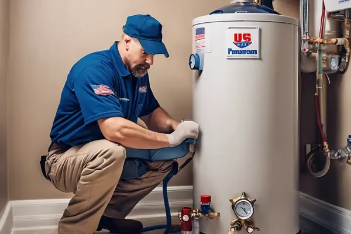
January 24, 2026 The Importance of Hiring Angle Stop Plumbing for Your Gas Water Heater Installation When it comes to your home’s comfort and functionality, few systems are as essential as your water heater. It provides the hot water that keeps daily life… January 17, 2026 🔥 Why Do Water Heaters Last Anywhere from 8 to 20 Years? When it comes to home essentials, your water heater is one of the hardest working appliances in your house. It’s easy to overlook—until something goes… January 11, 2026 🚫 Don’t Get Fooled! How Competitors Spoof Plumbing Company Numbers to Steal Business At Angle Stop Plumbing, we love serving our Middle Tennessee neighbors with honest, reliable service — the kind of work you can count on every time. But… January 4, 2026 The Importance of Protecting Your Tankless Water Heater with Water Filtration In today's modern homes, tankless water heaters have become a popular choice for their energy efficiency, endless hot water supply, and space-saving… December 28, 2025 Don't Let the Deep Cold Catch You Off Guard: The Importance of Winter Plumbing Vigilance Why Warm Winter Days Can Lead to Unexpected Plumbing Emergencies December 20, 2025 The Hidden Dangers in Your Laundry Room This Winter Why Paying Attention to Those Small Water Valves Matters—and How Angle Stop Plumbing Can Help December 14, 2025 How Angle Stop Plumbing Is Helping Middle Tennessee Prepare for Brutal Cold Weather Protecting Pipes and Preventing Future Plumbing Failures December 7, 2025 Deliver Holiday Cheer with Clean, Pure Water from Angle Stop Plumbing Refresh Your Festivities and Boost Joy This Season November 29, 2025 Transforming Your Bathroom: My Experience Installing a Freestanding Tub with Angle Stop Plumbing Why Upgrading to a Freestanding Tub Can Elevate Your Home Spa Retreat November 23, 2025 💨 Why Angle Stop Plumbing Trusts the Air Test: Ensuring Your New Pipes Are Flawless When you invest in new plumbing—whether it's a whole-house repipe, a major renovation, or new construction—you expect it to be reliable for decades. But… November 16, 2025 Winterizing Your Home or Investment Property: Essential Tips from Angle Stop Plumbing Save on Utility Costs While Your Property Is Vacant This Winter November 9, 2025 The Crucial Role of Plumbing Ventilation in Home Renovations Why Angle Stop Plumbing Is Your Go-To Partner for Renovating Bathrooms, Kitchens, and Laundry Rooms November 2, 2025 Transform Your Bathroom Oasis: Updating with Angle Stop Plumbing for Ultimate Relaxation Discover How Modern Plumbing Upgrades Can Elevate Your Comfort and Peace of Mind October 30, 2025 Stay Healthy and Comfortable This Winter: The Benefits of a Water Softener and Reverse Osmosis System by Angle Stop Plumbing How Clean, Soft Water Can Make a Difference in Your Home This Season October 26, 2025 Embrace the Beauty and Stay Prepared: Don't Let Fall Plumbing Foes Ruin Your Family Gatherings 🍂🦃 The air has a crisp new texture, the aroma of pumpkin spice is everywhere, and Middle Tennessee is putting on a stunning show of reds, oranges, and golds.… October 23, 2025 Understanding Water Hammer: Why It’s Harmful and How Angle Stop Plumbing Can Help Protect Your Home from Costly Water Damage by Addressing Water Hammer Early October 20, 2025 Don't Let Winter Surprise You: Why Colder Temperatures Reveal Plumbing Leaks (and How Angle Stop Plumbing Can Help) As the crisp autumn air gives way to the deep chill of winter, most of us are thinking about holiday cheer, warm blankets, and cozy fires. What we often… October 15, 2025 Don't Skimp on Level: Why a Crooked Toilet Flange is a Future Leak Waiting to Happen (and How Angle Stop Plumbing Can Save You!) Let's talk about something that most homeowners never really think about, but is absolutely critical to a leak-free bathroom: the toilet closet flange.… October 11, 2025 Protect Your Property: Understanding and Preventing Water and Sewer Line Failure The pipes connecting your home to the municipal water and sewer lines in the street are critical components of your plumbing system, yet they’re often out… October 4, 2025 Essential Reasons to Never Skip a Flood Test for Your New Tile Shower Base A stunning tile shower can elevate the look and feel of your bathroom. The vibrant tiles and fresh grout can create a luxurious oasis in your home.… September 28, 2025 Transform Your Bathing Experience with a Hot Water Recirculation Pump for Instant Comfort and Water Savings Imagine stepping into your shower or filling your bathtub, only to wait impatiently for warm water to flow. This frustrating delay wastes not only time… September 21, 2025 Essential Steps for a Comprehensive Fall Plumbing Inspection to Protect Your Home As the leaves change color and temperatures drop, fall becomes the ideal time to prepare your home’s plumbing for the winter. A comprehensive seasonal… September 15, 2025 The Importance of Plumbing Venting: Safeguarding Your Home's Drainage System Have you ever noticed that satisfying sound when your toilet flushes or when water swiftly drains from your sink? It's not just gravity at work—it's the… September 7, 2025 Winter Plumbing Prep: Essential Inspection Tips to Avoid Costly Emergencies As autumn descends with its crisp air and falling leaves, it's easy to get caught up in the excitement of the season—pumpkin spice lattes, cozy sweaters… August 31, 2025 The Hidden Dangers of Incorrect Sewer Line Slopes and How to Prevent Costly Repairs You might not think about your home's sewer line often, but it plays a crucial role in your daily life. When functioning correctly, it quietly manages… August 24, 2025 Why Proactive Commercial Plumbing Maintenance by Angle Stop Plumbing is a Must for Your Murfreesboro Business As a business owner in Murfreesboro, you know that plumbing emergencies can create more than headaches—they can hit your finances hard. A single burst… August 17, 2025 Unlock the Secrets to Pure Water Bliss with Reverse Osmosis from Angle Stop Plumbing Are you frustrated with the taste and smell of your tap water? Do you worry about the hidden contaminants that could be lurking in your glass? It’s time… August 3, 2025 Unlocking Efficiency: Why Angle Stop Plumbing is Your Go-To for Commercial Water Heater Installation For any commercial establishment in Murfreesboro or Nashville, having reliable hot water isn't just important – it’s essential. Whether you run a… July 27, 2025 Unmasking Hidden Leaks to Save Your Wallet with Routine Plumbing Inspections As a homeowner in Murfreesboro, you probably know the satisfaction of a well-kept home. However, what about the hidden issues that lie beneath the… July 20, 2025 Unlocking the Luxurious Experience of Multi-Head Showers through Proper Pipe Sizing There's nothing quite like stepping into a luxurious shower experience designed by Angle Stop Plumbing, especially with multiple showerheads. Picture… July 13, 2025 The Battle of Durability and Efficiency: Why Stainless Steel Outshines Copper in Water Heaters When it comes to keeping your home comfortable, few appliances play as vital a role as the water heater. It quietly ensures that we have hot water for… July 5, 2025 Why Professional Water Heater Installation by Angle Stop Plumbing is Essential for Your Safety and Comfort Picture this: you step into your home after a long, tiring day and crave a hot shower. It’s the simple luxuries of hot water for washing dishes and doing… July 2, 2025 Are You Hearing the Warning Signs of a Whole-Home Repipe Featuring Discolored Water and Frequent Leaks? Plumbing does an important job in our homes, working quietly until something goes wrong. It’s easy to take it for granted, but once you notice problems… June 28, 2025 Revolutionize Your Home: How Smart Leak Detection Valves Slash Water Damage Risks and Insurance Costs Water damage can be a homeowner's worst fear, leading to expensive repairs, mold issues, and significant stress. Just imagine a leak hiding behind your… June 25, 2025 Hot Water, Hot Savings: Why Your Heat Pump Water Heater Loves Warm Spaces Are you looking to slash your energy bills and reduce your carbon footprint? A heat pump water heater might be the perfect solution for your home! These… June 22, 2025 Protect Your Home Investment by Understanding Your Water Heater Warranty Your water heater is a crucial part of your daily routine, providing hot showers and clean dishes without a second thought. But what if it suddenly stops… June 18, 2025 Unlocking the Secrets of Your Water Heater: Essential Insights for Homeowners Do you really know what lies behind the hot water that flows from your tap? Water heaters are vital parts of our daily lives, yet many of us overlook… June 16, 2025 Upgrade Your Home Plumbing: Save Water, Cut Costs and Discover Angle Stop Plumbing Benefits In the heart of Murfreesboro, Tennessee, and in homes all over the country, plumbing is a vital part of our daily lives, often working tirelessly behind… June 13, 2025 7 Reasons Why Finding Water Leaks in Your Home Is So Challenging and How to Tackle Them Every homeowner knows the feeling: the anxiety that creeps in when you notice a drip, a stain on the ceiling, or a spike in your water bill. These signs… June 11, 2025 The Shocking Truth About Angle Stop Valves: How the Wrong Choice Can Lead to Disaster! It seems so simple, doesn't it? That little valve under your sink or behind your toilet, controlling the water flow. It's called an angle stop valve. But… June 8, 2025 The Hidden Costs of Natural Gas Appliances and Why You Need Angle Stop Plumbing Now Natural gas appliances bring comfort and efficiency to your home. From inviting fireplaces to high-efficiency ranges, they can enhance the quality of your… June 6, 2025 Unmasking the Invisible: The Urgent Need to Address Hidden Leaks and Mold in Your Home As homeowners, we often prioritize the visible aspects of our properties. We focus on the fresh paint, pristine lawns, and modern interiors. Yet, lurking… June 1, 2025 Unveiling the Hidden Dangers of Scale Deposits and How Angle Stop Plumbing Can Save Your Pipes Have you ever noticed a white, chalky residue around your faucets or showerheads? That’s scale, a build-up of minerals that, while easy to overlook, can… May 25, 2025 Why Angle Stop Plumbing Redefines Excellence in Bathroom Renovations Renovating your bathroom can be a game changer for your home, adding value and comfort. However, choosing the right plumbing service is vital to ensure… May 22, 2025 The Hidden Costs of High Water Pressure and How Angle Stop Plumbing Can Safeguard Your Home We all enjoy a strong shower and a hose that sprays effectively, but what if the high water pressure is actually causing harm to your plumbing? This… May 18, 2025 Unlock the Secrets to Crystal Clear Confidence with Reverse Osmosis from Angle Stop Plumbing In today's health-conscious society, we are increasingly careful about our food choices. We read ingredient labels and often favor organic options.… May 10, 2025 Don't Let Disaster Strike Discover Secrets to Preventing Catastrophic Water Pipe Ruptures in Your Home Water pipe ruptures can turn your home into a disaster zone, leading to significant damage and expensive repairs. Picture waking up to a flooded basement… May 3, 2025 Why Choosing the Right Brand of Shower Faucet Changed My Home Experience Forever When it comes to creating a space that feels like home, the details matter—especially in areas where we spend a lot of time, like the bathroom. For many… April 27, 2025 Unveiling the Secret: Salt-Based vs No Salt Water Softeners and Their Hidden Differences! Water softeners have become essential household appliances for many families, especially in regions dealing with hard water problems. The choice between… April 19, 2025 Unraveling the Mystery of Gradual Water Pressure Loss and Its Hidden Causes Understanding water pressure in our daily lives is essential. We often take it for granted until we notice a decline. If you have experienced gradual… April 8, 2025 Uncover the Hidden Dangers Lurking in Your Plumbing System as Spring Warms Up: Why You Can't Afford to Ignore It As winter's chill fades away, homeowners often look forward to the joys of spring—sunshine, flowers in bloom, and spending time outside. Yet, one critical… April 5, 2025 Is Your Home Secretly in Need of Repiping? Look Out for These Top Signs! As a homeowner, ensuring your space is both comfortable and functional is a top priority. One vital aspect of your home’s infrastructure is its plumbing… March 23, 2025 Revitalize Your Home: When to Upgrade Your Water Pipes for Better Performance and Peace of Mind Water pipes are the unsung heroes of our homes. They quietly deliver the lifeblood of our daily routines, enabling everything from showers to laundry and… March 11, 2025 Are Your Exterior Faucets Ready for Spring? Inspect, Prevent, and Protect for a Stress-Free Season As we welcome the beautiful spring weather, many of us look forward to enjoying outdoor activities. However, after experiencing some cold winter days… March 9, 2025 Don't Get Soaked: Why Knowing Your Water Shut-Off is Non-Negotiable We all take running water for granted. It's there when we need it, for showers, dishes, laundry, and everything in between. But what happens when that… March 8, 2025 Prevent Costly Damage: How to Detect Water Leaks Early and Protect Your Home Water leaks can wreak havoc on homes if they're not spotted in time. They can result in structural damage, mold growth, and costly repairs. For… March 1, 2025 10 Surprising Ways Corrosion Can Ruin Your Water Heater, Appliances, and Plumbing Fixtures - Homeowners, Beware! Corrosion is a hidden threat that can quietly destroy your home’s plumbing and appliances. Many homeowners underestimate the serious damage that corrosion… February 19, 2025 What's Hiding Behind a Water Leak: Uncovering the True Costs of Unnoticed Damage Water leaks can feel like a minor annoyance, yet they often lead to catastrophic consequences if ignored. These leaks can escalate from a simple drip to… February 18, 2025 Six Key Benefits of Water Heater Maintenance Benefit #1 Extends Lifespan: Regular maintenance, including flushing the tank to remove sediment, extends the life of your water heater. It prevents…Book in about a minute
Schedule online any time of day, or call and talk it through with us. Either way, you're on the book.